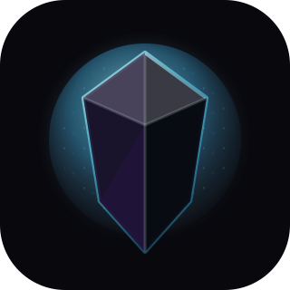

Generic by design
Configure any Hermes API base URL and optional bearer token. No hardcoded profile, operator, host, or vault.
Hermes Client is a desktop Obsidian plugin for any reachable Hermes Agent API Server. It supports session chat, streaming responses, hidden current-note context, image input, and optional Hermes-Relay voice without storing provider keys or taking over your vault.

Configure any Hermes API base URL and optional bearer token. No hardcoded profile, operator, host, or vault.
Uses POST /api/sessions/{id}/chat/stream with a non-stream fallback setting for troubleshooting.
MediaRecorder audio goes to Hermes API audio routes or Hermes-Relay /voice/*; sentence chunks stream back through Hermes-owned TTS.
No autonomous vault mutation in v1. Context, image uploads, and voice capture happen only from explicit user actions.